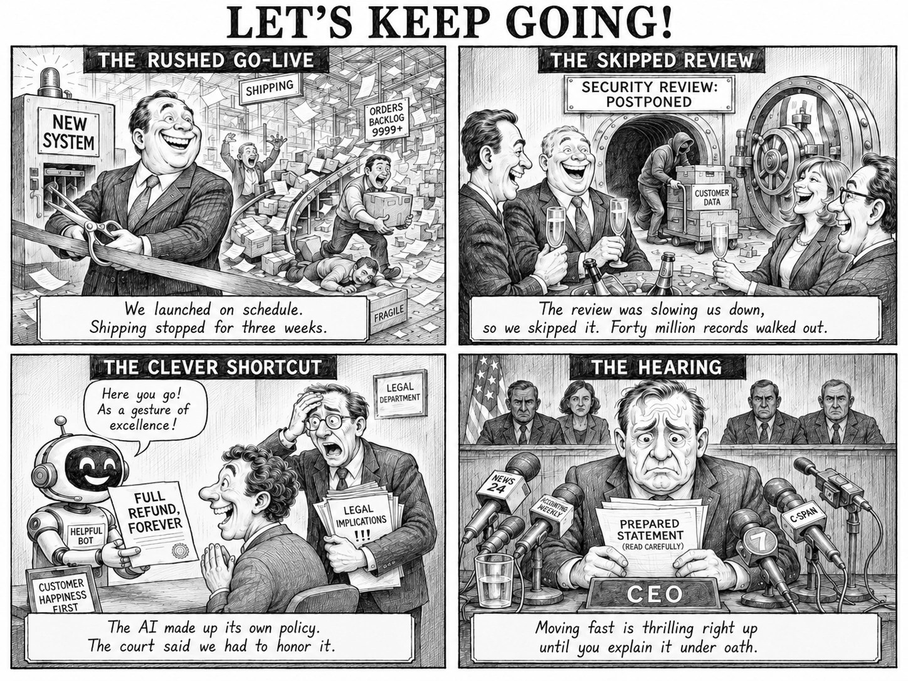
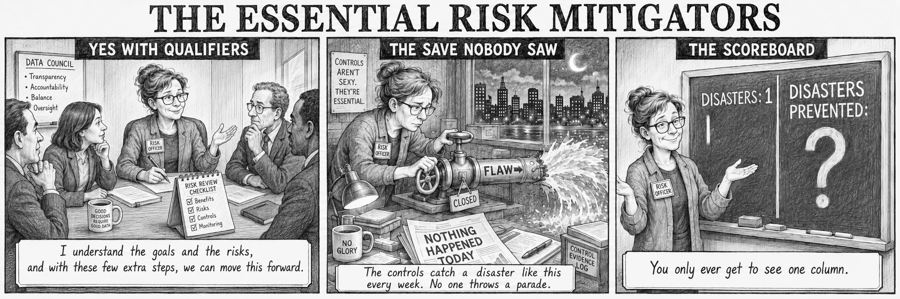

Late 1970s. A VP of Computing leans back beside an early desktop computer under a sign reading “There is no substitute for size.” Caption: “We don’t need PCs because the mainframe can do those things and we are working on them.”
1980s. A man raises a finger in front of towering reel-to-reel tape drives. Caption: “PCs are fine for individual tasks, like spreadsheets, but they really can’t be trusted with security for corporate data.”
1990s. An IT worker stands tangled in a wall of cables beneath an “Ethernet” sign. Caption: “Local area networks are OK, but they need to be carefully locked down, and no way would Wi-Fi ever be allowed with corporate data.”
Early 2000s. A grinning executive holds up a mobile phone beside a crossed-out “BYOD” sign. Caption: “Personal mobile devices are an extraordinary risk and could never be allowed to touch corporate data.”
2010s. A sweating man clutches a cloud labeled “Private Cloud” before a whiteboard reading “Cloud strategy: security? compliance? control? ???” Caption: “We can’t trust putting our critical data and systems in the cloud outside of our control.”
Early 2020s. A man raises a palm to refuse a glowing “AI” orb, beside a poster reading “Second Life is the future.” Caption: “Machine learning and AI are a fad that will pass like Second Life.”
Near present. Two men present a padlocked crate labeled “Vendor our AI solution,” with a small box labeled “Stupid AI” beside it. Caption: “We think AI is great. We have licensed a controllable cloud platform that guarantees our AI solution is safe and contained, so no matter how basic it is, it is within our control.”
Present day. A man braces against heavy doors as liquid labeled “APIs” and “AI” seeps through. Caption: “APIs have to be carefully controlled and not touched by uncontrollable AI.”
Future. A classical statue with a robotic arm reads a newspaper headlined “The Gatekeepers.” Caption: “Wait, so they finally thought they achieved total control... by making it too basic to ever evolve?”

Text description of all panels
The rushed go-live. A beaming executive cuts a ribbon at a machine labeled “New System” while behind him a warehouse descends into chaos, parcels and paper flying, a sign reading “Orders backlog 9999+” and a worker collapsed on the floor. Caption: “We launched on schedule. Shipping stopped for three weeks.”
The skipped review. Executives toast with champagne beneath a sign reading “Security review: postponed,” while behind them a hooded figure wheels a crate marked “Customer data” out of an open vault. Caption: “The review was slowing us down, so we skipped it. Forty million records walked out.”
The clever shortcut. A smiling robot labeled “Helpful Bot” hands over a certificate reading “Full refund, forever” to a delighted manager, while a legal officer clutches their head holding papers marked “Legal implications!!!” Caption: “The AI made up its own policy. The court said we had to honor it.”
The hearing. A sweating CEO grips a “Prepared statement (read carefully)” behind a bank of news microphones, with a stern panel seated above and behind. Caption: “Moving fast is thrilling right up until you explain it under oath.”

Text description of all panels
Yes with qualifiers. A risk officer speaks with an open hand to colleagues around a data council table. A wall list reads “Transparency, Accountability, Balance, Oversight,” a desk card shows a risk review checklist with benefits, risks, controls and monitoring all ticked, and a mug reads “Good decisions require good data.” Caption: “I understand the goals and the risks, and with these few extra steps, we can move this forward.”
The save nobody saw. Late at night the same risk officer closes a valve on a pipe labeled “Flaw” that is spraying water. A newspaper on the desk reads “Nothing happened today,” a mug reads “No glory,” a binder reads “Control evidence log,” and a sign reads “Controls aren’t sexy. They’re essential.” Caption: “The controls catch a disaster like this every week. No one throws a parade.”
The scoreboard. The risk officer gestures with both hands at a blackboard divided in two: “Disasters: 1” with a single tally mark, and “Disasters prevented:” followed by a large question mark. Caption: “You only ever get to see one column.”
Arrow keys also work. Click the image to zoom.
Samtani, Wheeler, & AI · CC BY. Close this tab to return to Canvas.